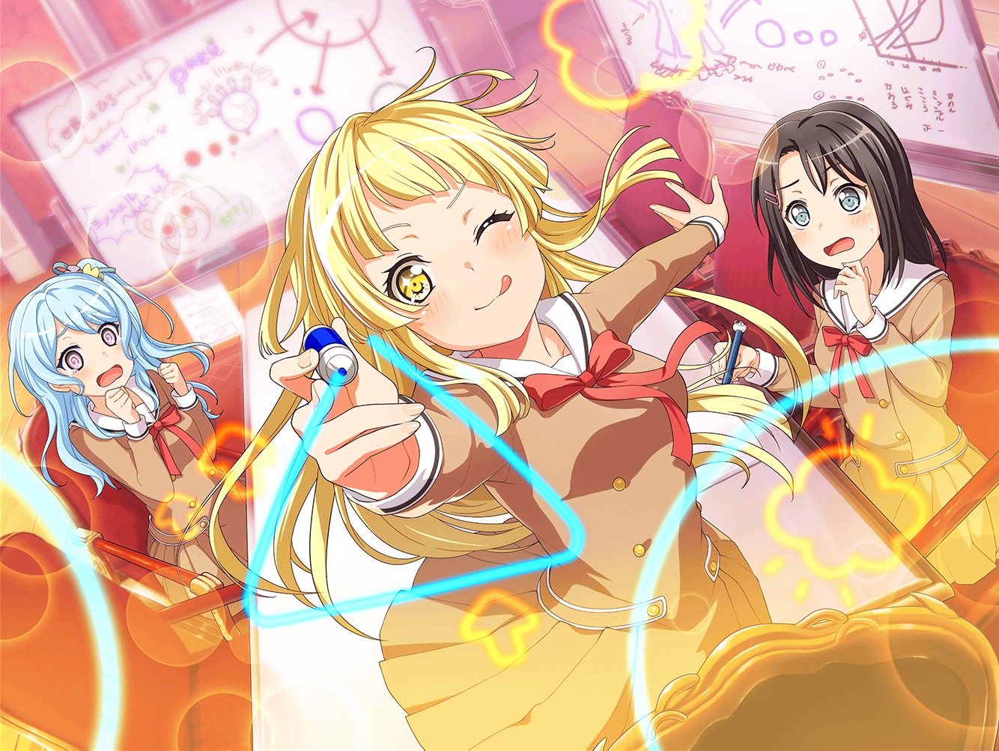

弦巻家
こころ
さて、ライブも決まったことだし、新曲を作るわよ！
花音
ライブも急に決まったのに、また急だね。こころちゃん
美咲
もし新曲を作るとしたら、
すぐにでも作り始めないと間に合わなさそう
こころ
じゃあすぐに取り掛かりましょう。
楽しいことをとっておいてもしょうがないわ！
花音
じゃあまずは歌詞かな？
いつも通りやればいいかな、美咲ちゃん？
美咲
そうですね。
こころのアイディアは泉のように出てきますから、
それをあたしと花音さんでまとめていきましょう
花音
うぅ、私はいつも全然役に立ってないよ……
だから、もし美咲ちゃんがいなかったら、
歌詞はすごく大変なことになりそうだね
美咲
それは考えたくないですね。
もしそうなったら、すごいカオスな歌詞に
メロディーが付きそうですね……
こころ
二人とも！ まずはどんな曲にするか考えるわよ。
そうだわ、確か薫が儚い曲を作りたいって言っていたし、
それにしようかしら！
美咲
いやいや、儚い曲をクラスメイトに聴かせたいわけじゃないから。
それに、儚い曲は薫さんとも一緒に時間をかけて
作ったほうがいいんじゃないかなーって思うな！
こころ
そう？ もしかしたら、美咲のクラスメイトは
儚い曲を聴きたいって思っているかもしれないじゃない
美咲
いやいや、そんな曲を聴きたいような
クラスメイトじゃないと思うよ……
花音
じゃ、じゃあ！
美咲ちゃんがクラスの人に伝えたいことを
歌詞にしてみるっていうのはどうかな？
こころ
花音の言う通りだわ！
それで、美咲は何を伝えたいの？
美咲
うーん、すっごく簡単に言うと……
世界は思ってるより広いんだってことかな
こころ
世界を、広げる……良い！ すごく良いわ！
こころ
何だか、イメージが見えてきた気がするわ！
花音
こころちゃん、すごくやる気になったみたい
美咲
そうだね。あとはこころの直感を信じて、
あたしたちもがんばろう。
……こころのイメージの翻訳を！
こころ
はぴはぴはぴ～、ふんふーん……
楽しいメロディーにしたいわね！
美咲
始まったよ、花音さん。
こころのスーパー作詞タイム！
花音
う、うん……意識を強く持ってがんばるね！
こころ
ふふふーん、はぴはぴ、わーるど……！
もっともーっと楽しい歌詞にしていくわ！
こころ
美咲、イメージを絵でも表現していくわね。
これでもっと伝わるはずよ！
美咲
それはヒトデ？ トナカイ……？
いやいや、その絵じゃイメージが全然伝わってこない
花音
うぅ……いつもより全然分からない……
美咲
ヒトデが丸になって、星になる……？
ヒトデって最初から星っぽいのに、なんで丸になった！？
こころ
あっ、そうだわ！
この幸せと、こっちの幸せを合わせて……
いっちゃう……スマイル、ハッピー！
花音
え、え、え……っ？
美咲ちゃん、私……今回も全然分からないよ……
美咲
花音さん、大丈夫です。
あたしも分かってるわけじゃないですから
美咲
でも、分からないなりにも、
何とかこころのイメージを掴んで、曲にしないと……！
花音
美咲ちゃん、いつにも増してやる気……
こころ
この小さな星たちが集まって、繋がり合うことで笑顔になるの！
美咲
星……なんのことだろ。ハロハピ、かな。
ハロハピが、笑顔を繋ぐってこと……
こころ
いいえ、美咲。もっと素晴らしいことよ！
人が集まって、ピラミッドを作るの！
花音
ピ……ピラミッド？
一体、何が起こってるのかな……
美咲
多分、人が集まったほうが、
楽しさは増えていくよってことだと……思います
花音
さすが、美咲ちゃん！
私、全然意味分からないよ……
こころ
それでね、この三角で革命が起こると……
ほら……もんもん！ ……イエーイ！
花音
三角？ 革命？ もんもん？ うぅ、頭が……
美咲
わーわー、花音さん無理しないで。
あとはあたしが何とかしますから！
美咲
（新曲を、クラスの人たちに聴いてもらいたい。
だから、もっとがんばらないと……！）
美咲
……こころの歌詞はこんなものじゃないでしょ。続けて！
こころ
ええ、もちろんよ！
ここは、はぴはぴー！ ふーん……
わーるど……ふふふーん！ ……いっちゃう……もんもん！
美咲
分かった！ つまりは……
『はぴはぴはっぴーわーるど！ いっちゃうモンモン！』
こころ
それだわ！ さすが美咲！
この曲、素晴らしい予感しかしないわ！
花音
ふ、ふふ……っ……美咲ちゃん……ふふふ……
美咲
あっ……つい、周りが見えなくなってた……
美咲
……ちょっと休憩！
こころ
もう休憩なの？ あたしにはまだまだ書きたいものが
たーっくさんあるのに！
こころ
もっともーーっと世界中を笑顔にする歌詞を作るわよ！
美咲
こころ、元気すぎる……ちょっと頭を整理するから休ませて
こころ
そう。それならあたしは、
さっき考えたフレーズを歌っているわ！
はぴはぴはっぴーわーるど！ いっちゃうモンモン！
美咲
ちょっ、今それはやめて……！
花音
あ、あはは～